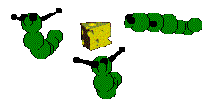

Catz 1 Mouse "grubz" for you
~~~~~~~~~~~~~~~~~~~~~~~~~~~~~
NOTE: These "grubz" will overwrite your game's own mouse files. Please put your originals somewhere safe, and read the readme files included!


Green grubz

.